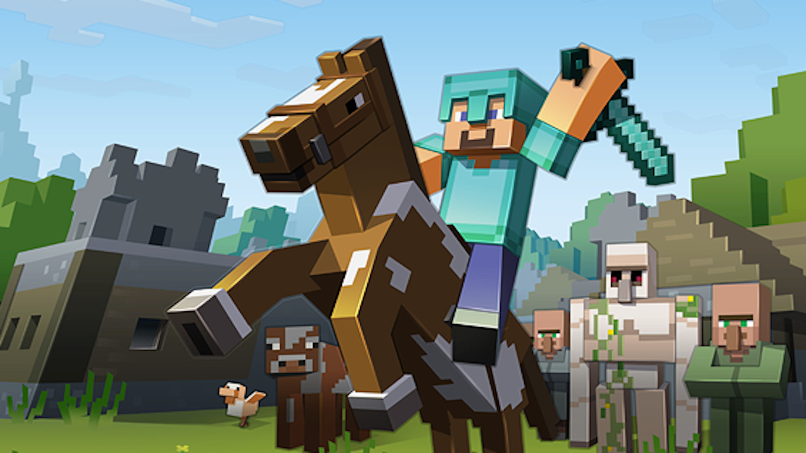
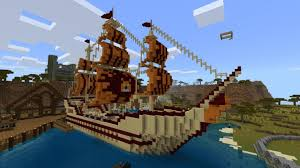
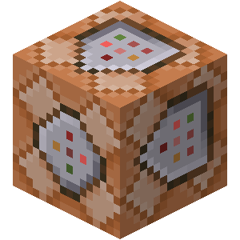

מיינקראפט הוא משחק ממש מגניב, עם המון אפשרויות בתוכו ותמיד דברים חדשים לגלות.בגדול מיינקראפט הוא משחחק תלת מימדי בעולם שעשוי מבלוקים, שבו אתה יכול לזוז, לבנות ולשבור בלוקים ועוד.מצב המשחק הקלאסי או סרבייבל* ומוכר גם במצב המשחק כריאייטיב*, הארדקור*, ושחקנים רבים משחקים בו גם בשרתים*(* מפורט יותר בהסברים עליהם באתר)
טוב, תכנית - להרוג את הדרקון בסוף המשחק. אבל מדובר פה רק במצב משחק סרבייבל, ובכל מקרה גם במצב משחק סרבייבל אפשר למצוא עוד הרבה דברים לעשות...אז מה הייתי מגדיר כמטרה? ובכן, אחד הדברים היפים ביותר במשחק מיינקראפט הוא שאתה יכול לקבוע לעצמך את המטרות, באפשרות חופש המשחק, שמאפשר לך לבנות ולהרוס בלוקים.לדוגמא, המטרה שלך יכולה להשיג את השריון והכלים הכי חזקים וטובים במשחק, המטרה שלך יכולה להיות לבנות את הבית או המבנים הכי יפים,המטרה שלך יכולה גם להיות באמת פשוט להרוג את הדרקון, והמטרה שלך יכולה להיות לעשות אצ'יוומנטים, או לבנות חוות, או עוד הרבה אפשרויות - וכל אלה רק במצב המשחק סרבייבל...בעצם ישנם המון מטרות אפשרויות, כך שכל שחקן יכול לבחור מה שמתאים לו ומה שהוא אוהב, וזה עוד אחד מהדברים האהובים עליי במשחק מיינקראפט.
להבנה רחבה יותר ופירוט נוסף עברו לדפים האחרים בעזרת חלונית המעבר בצד ימין
מצב המשחק הרגיל הוא סרבייבל (בעברית: הישרדות), שבו אתה צריך לדאוג לעצמך לאוכל ולכלים, ואם לא תיזהר בו אתה עלול למות. המטרה התכנית שנוצרה עבור המשחק בצורה הזו היא להרוג את הדרקון שבסוף המשחק, שנמצא בעולם 'האנד', שאפשר להגיע אליו אחרי עולם ה'נת`ר' (שמפורט עליהם יותר ב'מבנה העולם'), בכל מקרה. הרעיון הוא שאתה יכול לבחור לעצמך כל מטרה שאתה רוצה - ליצור חוות, לבנות בתים, להשיג דברים נדירים, ועוד. במצב המשחק הזה מפלצות יכולות לפגוע בך, כמו זומבים ועכבישים (מפורט עליהם יותר בפירוט על חיות ומובים), ולכן עליך להזהר בלילה או בתוך מערות חשוכות. יש לך במשחק 20 נקודות חיים, שאפשר לראות בצורת עשרה לבבות (כל נקודה היא חצי לב). המפלצות מורידות לך בהתאם לרמת הקושי חיים - במצב משחק קל הן יורידו קצת, בבינוני יורידו באמצע, ובקשה יורידו הרבה. (במצב משחק 'שליו' אין מפלצות בעולם, והדרך היחידה לקבל נזק היא באמצעות דברים כמו טביעה, הישרפות, נפילה וכו') לפעמים נמאס לשחק בעולם סרבייבל שלכם. אם זה קורה אפשר להציב לעצמך מטרות לדברים להשיג ולבנות, או שאפשר לשחק בשרת עם חברים (הסבר נוסף על שרתים בדף שרתים), ואפשר גם תמיד לנסות מצבי משחק נוספים או שרתי מיני גיימס (הסבר גם על החלק הזה).
הדבר הראשון שצריך לעשות בעולם מיינקראפט מסוג סרבייבל הוא לחצוב עץ, כי את הדברים הראשונים תיצרו מעץ. בשביל לזוז לוחצים על המקשים 'W', 'S', 'D', 'A' - קדימה, אחורה, ימינה, שמאלה. ובשביל להסתובב מזיזים את העכבר. לאחר שמצאתם עץ והלכתם אליו, אתם צריכים להסתכל על אחד מהבלוקים בגזע שלו, וללחוץ ארוך קליק שמאלי עד שהבלוק נשבר. לאחר שהבלוק נשבר הוא יפול בתור אייטם לרצפה, ותוכלו ללכת אליו ולאסוף אותו. השלב הבא לאחר שקיבלת עץ הוא ליצור כלים. בשביל זה עליכם ללחוץ על המקש 'E' - ובכך לפתוח את תפריט הפריטים שעליכם. בצד ימין למעלה יהיו 4 ריבועים בהם תוכלו להשים פריטים כדי ליצור מהם דברים. עכשיו עליכם לקחת מהתפריט את העץ שחצבתם בעזרת קליק שמאלי עליו, להניח אחד או יותר במשבצת כלשהי באזור היצירה, בעזרת קליק ימני על אותה משבצת (בכדי להניח כל פעם רק אייטם אחד ולא את כל העץ). לאחר מכן עליכם לקחת את קרשי העץ ממשבצת הקבלה שנמצאת ימינה למשבצות היצירה - על כל בלוק עץ תקבלו 4 קרשים. אם תמלאו את משבצות היצירה בקשרי עץ תוכלו לקחת בלוק 'שולחן מלאכה' - בו תוכלו ליצור יותר דברים - ומשם להתקדם הלאה. בשביל להתקדם הלאה ולהשתפר במשחק אפשר לראות גם סרטוני הסבר ביוטיוב, ובכללי ככל שתשחקו יותר ותצברו יותר נסיון תבינו יותר איך לשחק.
מצב משחק כריאייטיב, או בעברית 'יצירתי', הוא מצב משחק שונה מאוד מסרבייבל. במצב משחק כריאייטיב אתה יכול בתפריט הפריטים ('E') מה שאתה רוצה, כמה שאתה רוצה. בעצם המשחק במצב הזה לא נועד בשביל לחימה או השגת משאבים - כי יש לך כבר כל מה שתרצה להשיג. לכן המטרה במצב משחק כריאייטיב לרוב היא בניה: לבנות בתים, לבנות רחובות, לבנות ערים, לבנות ספריות, גנים, מזרקות, אקווריומים - ובכללי כל מה שעולה על הדימיון ואתה רוצה לבנות. בעצם המשחק בצורה הזאת נועד יותר ליצירה של עולם איך שאתה רוצה, ולפעמים מעדיפים גם לבנות אותו דווקא על עולם שטוח (ראה 'מבנה העולם'). אם יש בכם יצירתיות ואתם רוצים לבנות איתה דברים חדשים, מצב משחק כריאייטיב יתאים לכם.
בלוקי פקודה, או באנגלית command blocks, הם בלוקים שיכולים להריץ פקודות אז דבר ראשון, מה זה פקודות בכלל? הפקודות הן מילים שמורות שאתה יכול לכתוב בצ'אט אחריי '/' כדי להפעיל ולעשות דברים שונים. לדוגמא יש פקודה בשביל לשנות את מצב המשחק שלך, יש תמונה בשביל למלא אזור מסויים בבלוקים, יש פקודה כדי להשתגר, יש פקודה כדי להשמיע צלילים וכו'. אז למה צריך בלוקי פקודה? בלוק פקודה יכול לשפר את הבניה של העולם שלך בעזרת דברים רבים שאפשר ליצור אם אחד מהם או כמה. לדוגמא אם תתזמן טוב פקודות למילוי בלוקים, תוכל לעשות דלת נפחת ונסגרת, תוכל ליצור מעלית או מכונת שיגור בעזרת פקודה של שיגור, תוכל לעשות אזור בו תהיה מהיר יותר בעזרת פקודות קצת יותר מתקדמות וכו'. בעצם בלוקי פקודה משפרים את הפוטנציאל של מבנים שיצרתם, ונתונים גם אפשרויות חדשות בשביל יצירה.
 הארדקור מוד הוא בלה בלה בלה
מבנה העולם הוא בלה בלה בלה
חיות ומובים הם בלה בלה בלה
שרתי מיינקראפט הם בלה בלה בלה